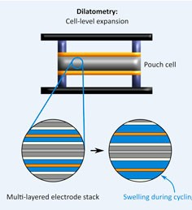
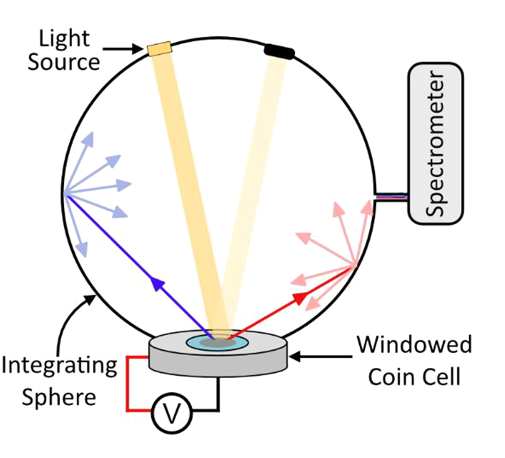
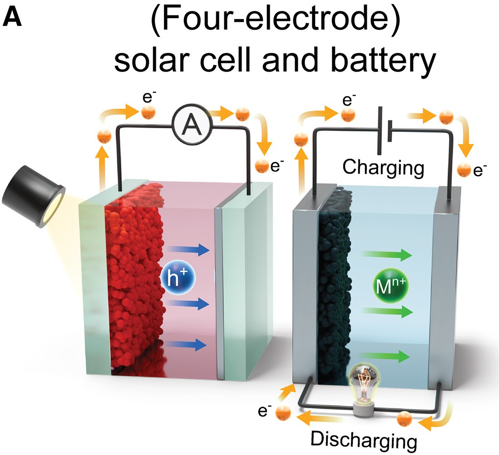
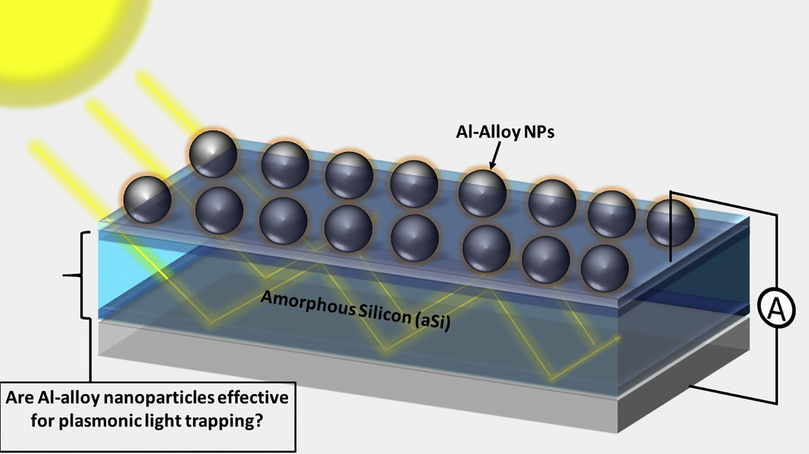

|
Arvind Pujari
I am currently a Tenure-Track Assistant Professor at the Institute for Materials Research at Tohoku University in Sendai, Japan. I lead an independent research group focusing on developing scalable operando tools for battery research. My position is part of the $2.5 billion UREX Grant designed to make Tohoku University Japan's first university of international excellence.
I have a PhD in Physics from the
Cavendish Laboratory
at the
University of Cambridge
(2020–24). My PhD focused on interactions between light and batteries for enhanced charging rates and operando spectroscopy.
I then joined
Illumion Ltd.
(2025–26), a battery instrumentation startup based in Cambridge, as an R&D scientist.
There, I worked with both academic and industrial customers to develop tools to accelerate battery research.
Before this, I completed my undergraduate degree in
Metallurgical and Materials Engineering
at the
Indian Institute of Technology Madras (IIT Madras).
There, I was awarded the Dr. Shankar Dayal Sharma Gold Medal as the undergraduate student with the best all-round performance
in curricular and extracurricular activities during 2016–2020.
Find out more at my group website:
batlab.jp.
Email /
CV /
Google Scholar /
Twitter /
Linkedin
|
|
|
Research
My research focuses on using interactions between light and batteries to enhance their energy storage and study electrochemical mechanisms. I am particularly interested in developing scalable optical operando techniques to study batteries in real time.
|
News
- (Aug 2026) I will be starting an independent research group at Tohoku University as a Tenure-Track Assistant Professor!
- (May 2026) The last paper from my PhD was published in Energy & Environmental Science, showcasing a new optical method to study batteries
- (Feb 2026) A collaborative first-author paper between Illumion and Wacker Gmbh was published in the Journal of the Electochemical Society!
- (Mar 2025) The results of my JSPS Summer Fellowship were published in the Journal of the Electrochemical Society (with Science Tokyo and Lasertec Co.)
- (Mar 2025) Our perspective on photobatteries was published in Joule!
- (Feb 2025) I have joined Illumion, a Cambridge University spinout as an R&D Scientist!
- (Dec 2024) I have submitted my PhD thesis!!
- (Jul 2024) First author paper on the physics of photobatteries published in ACS Energy Letters!
- (Jun 2024) Spending 3 months at the Tokyo Institute of Technology through a JSPS Summer Fellowship
- (May 2024) First author paper on the design of optical batteries published in Small Methods!
- (Oct 2023) First author paper on thermal contributions to aqueous photobatteries published in ACS Energy Letters!
- (Jul 2023) Gave a talk on the fundamental studies of mechanisms of photobatteries at MC16 at Dublin.
- (Sep 2021) Completed my masters with a distinction! Onto the PhD!
- (Aug 2021) Paper on effective refractive indexes of core-shell plasmonic nanoparticles published in Materialia
- (May 2021) Joined Neil Greenham's/Michael De Volder's groups (Physics/Engineering) for my PhD project on light-rechargeable photobatteries
- (Jan 2021) Joining Stephan Hoffman's group (ElecEng) for a lab-rotation on the characterization of 2D materials
- (Jan 2021) First author paper on light-trapping in solar cells by Al-alloy plasmonic nanoparticles published in Sustainable Materials and Technologies
- (Nov 2020) Joining the groups of Roisin Owens (ChemEng) and Tuomas Knowles (Chemistry) for a lab-rotation on microfluidics for exosome detection
- (Nov 2020) One of only 8 receipients of the INAE Innovative Student Project Award for my undergraduate thesis!
- (Sep 2020) Joined the University of Cambridge for an MRes+PhD in Nanoscience and Nanotechnology!
- (Sep 2020) Graduated from IIT Madras with a CGPA of 8.90. Phew!
- (Sep 2020) Received the B. Krishnamurty Silver Medal for the best undergraduate thesis in Metallurgical and Materials Engineering at IIT Madras!
- (Sep 2020) Received the Shankar Dayal Sharma Gold Medal for the best all-round performance by an undergrad at IIT Madras between 2016-2020!
- (Jul 2020) First author paper on the plasmonic properties of Al-Cu core-shell nanoparticles published in Materials Chemistry and Physics
- (Jun 2020) Defended my undergraduate thesis on modelling Al-based plasmonics at IIT Madras!
- (May 2019) Spending a summer at David Warsinger's group at Purdue (MechEng) working on inverse opals nanomembranes
- (Apr 2017) Work on self-segrating smart dustbins featured in the Chennai Times!
- (May 2018) Spending a summer at Kabeer Jasuja's group at IIT GN ((ChemEng)) working on carbon quantum dots for mercury detection!
- (Apr 2017) Work on a mechanism for toilet seat sanitation featured in the Times of India!
- (Mar 2017) Part of a team which received the GYTI Award from the Government of India for our mechanism for toilet seat sanitation
|
|

|
Unveiling the Anomalous Expansion of Silicon-Carbon Composites Obtained by Chemical Vapor Infiltration Through Operando Charge Photometry and Dilatometry
Arvind Pujari, Alice J. Merryweather, Silke Berger,
Johanna Poschenrieder, and Stefan Haufe
Journal of The Electrochemical Society
May 2026
We use optical microscopy to study swelling in silicon-carbon composites.
|
|

|
Reconstructing the electrochemistry of lithium-ion batteries through operando diffuse reflectance spectroscopy
Arvind Pujari, Gratsiela Kostova, Hwee Jien Tan,
Atsunori Ikezawa, Hajime Arai, and Michael De Volder
Energy & Environmental Science
April 2026
We introduce diffuse reflectance spectroscopy as a low-cost operando
technique to reveal reaction heterogeneity, lithium-ion diffusion,
and capacity-loss mechanisms in batteries.
|
|

|
Photobatteries: Prospects and fundamental limitations
Arvind Pujari, Kohei Shimokawa, and Michael De Volder
Joule
March 2025
We examine the fundamental limitations of photobatteries and design principles for their development.
|

|
What Makes a Photobattery Light-Rechargeable?
Arvind Pujari, Byung-Man Kim, Hooman Abbasi, Myeong-Hee Lee, Neil C. Greenham, and Michael De Volder
ACS Energy Letters
July 2024
We demonstrate the physical principles of photocharging.
|

|
Does Heat Affect The Observed Behavior of Aqueous Photobatteries?
Arvind Pujari, Byung-Man Kim, Farheen N. Sayed, Kate Sanders, Wesley M. Dose, Angus Mathieson, Clare P. Grey, Neil C. Greenham, and Michael De Volder
ACS Energy Letters
August 2023
Here, we show that the response of aquoeus photobatteries is dominated by thermal, rather than optical effects.
|
|

|
Aluminium nanoparticles alloyed with other earth-abundant plasmonic metals for light trapping in thin-film a-Si solar cells
Arvind Pujari, Tiju Thomas
Sustainable Materials and Technologies
January 2021
The light trapping ability of Al–based alloy nanoparticles in an amorphous silicon solar cell are studied, Al-In and Al-Mg are the most promising combinations.
|
|